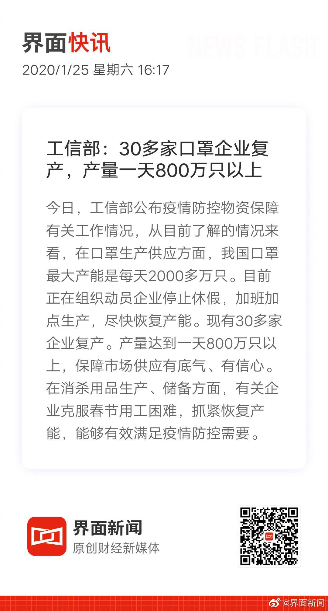

看，我国一天口罩产能就是800万只，已经很惊人了。但真要像各专家呼吁的那样全国人民都戴口罩，全国14亿人，依然是抢购一空，怎么保证医疗工作者、患者和需要接触患者的人有口罩供应？而那些买不到口罩的人不惊恐吗？那些人简直就是在散布恐慌。 //@叶檀:呼吁，让最高效的企业派干部跟武汉结合，提升运
@界面新闻:
【工信部：30多家口罩企业复产，产量一天800万只以上】今日，工信部公布疫情防控物资保障有关工作情况，从目前了解的情况来看，在口罩生产供应方面，我国口罩最大产能是每天2000多万只。目前正在组织动员企业停止休假，加班加点生产，尽快恢复产能。现有30多家企业复产。产量达到一天800万只以上，保障市场供应有底气、有信心。在消杀用品生产、储备方面，有关企业克服春节用工困难，抓紧恢复产能，能够有效满足疫情防控需要。
- 